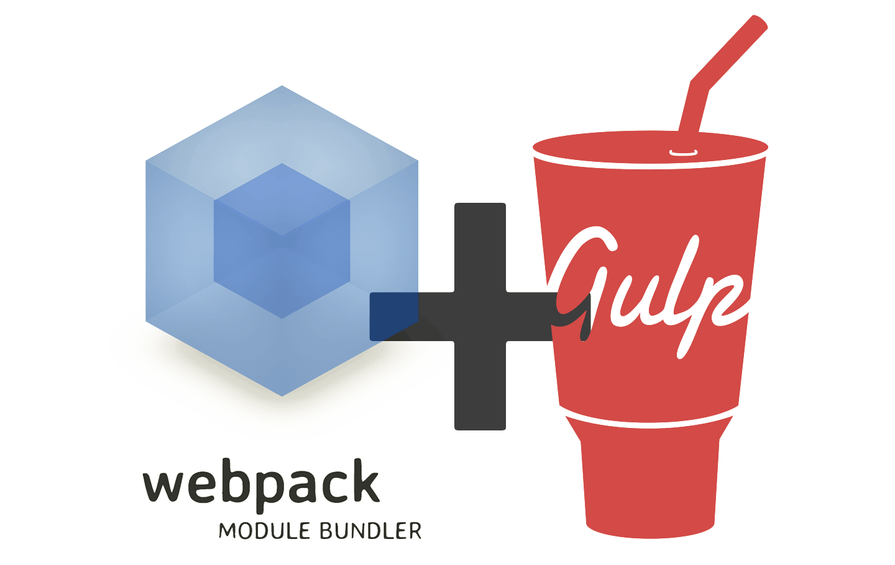

new build
System requirements
Node JS 8+
node -vNPM 6+
npm -vInstallation
Install GULP Js globally, CLI version 2+
gulp -vInstall Yeoman and generator
npm install -g yo
npm install -g generator-p2hUsage
To generate your new project:
yo p2hYou will see prompt menu like this

What inside?

Basic commands
gulp
this will compile the entire project into development mode, start browserSync on localhost and will watch all the changes to the SCSS, html, images etc.
gulp dist
this is used to compile project assets into production.
gulp zip
compress all files into zip (except node_modules folder). The name of ZIP is the same as the project folder.
Additional commands for CSS compilation:
gulp compactgulp compressedgulp nestedNOTE: this is for css output control
Project structure

gulp |
folder with gulp tasks |
src |
folder with source files |
babel.config.js |
configuration file for Babel (es6 code transpiler) |
eslintrc.js |
configuration file Eslint |
gulpfile.js |
GULP main file |
htmlhint.config.js |
configuration file for HTML hint |
package.json |
project dependencies |
prettier.config.js |
configuration file for Prettier (code formatter) |
README.md |
Short guide for build |
sass-lint.yml |
configuration file for SASS/SCSS linter |
webpack.config.js |
configuration file for webpack (if chosen) |
P.S. all files are mandatory. everything should be included into the zip for the client.
except node_modules
Source files

All files compile to the dist folder, from which start browserSync
For AJAX files create folder inc in the root of src folder.

What is webpack?
What is a Module?
“Good authors divide their books into chapters and sections; good programmers divide their programs into modules.”
Module benefits
- Maintainability
- Namespacing
- Reusability
What is a webpack Module?
An ES2015 import statement
import "./module-name"; import "module-name"; import defaultExport from "module-name"; import jQuery from "jquery"; import foo from "../../bar";
ES2015 import usage example
bar.js
export default function bar() { console.log('Module `bar` exported'); }
app.js
import foo from './bar'; foo(); console.log('Module `bar` imported');
And result

A CommonJS require() statement
const package = require('module-name') const { a, b, c } = require('./bar')
CommonJS require() usage example
bar.js
exports.a = 1; exports.b = 2; exports.rtl = str => [...str].reverse().join(''); exports.default = log => { console.log(log); };
app.js
const {rtl} = require('./bar.js'); const {a, b} = require('./bar.js'); const bar = require('./bar.js'); const log = require('./bar.js').default; console.log(rtl('test')); console.log({a,b}); console.log(bar); log('Default export');
And result

But... is that all??!!!🧐
LOL, no!!!😁
🤔🤔What else?🤔🤔

Babel🧐

Babel is a JavaScript compiler
- Transform syntax
- Polyfill features that are missing in your target environment
- Source code transformations (codemods)
- And more!
// Babel Input: ES2015 arrow function
[1, 2, 3].map((n) => n + 1);
// Babel Output: ES5 equivalent
[1, 2, 3].map(function(n) {
return n + 1;
});
What we get from babel?
Arrow function
// Expression bodies
var nums = evens.map((v, i) => v + i);
// Statement bodies
nums.forEach(v => {
if (v % 5 === 0)
fives.push(v);
});
Template Strings
// Basic literal string creation
`This is a pretty little template string.`
// Multiline strings
`In ES5 this is
not legal.`
// Interpolate variable bindings
var name = "Bob", time = "today";
`Hello ${name}, how are you ${time}?`
Promises
const slider = new Promise(resolve => {
// checking, if content slider is loaded
this.holder.on('init', slick => {
this.carousel = slick;
// resolving promise
resolve();
});
});
slider.then(() => {
this.videoInit();
});
Async/await
const initialState = async () => {
await slider;
};
Default + Rest + Spread
function f(x, y=12) {
// y is 12 if not passed (or passed as undefined)
return x + y;
}
f(3) == 15
Map + Set
// Sets
var s = new Set();
s.add("hello").add("goodbye").add("hello");
s.has("hello") === true;
// Maps
var m = new Map();
m.set("hello", 42);
m.set(s, 34);
m.get(s) == 34;
and more
More to come
- Update to GULP 4
- More frameworks
- HTML template engines
- Icomoon font generation
- etc...